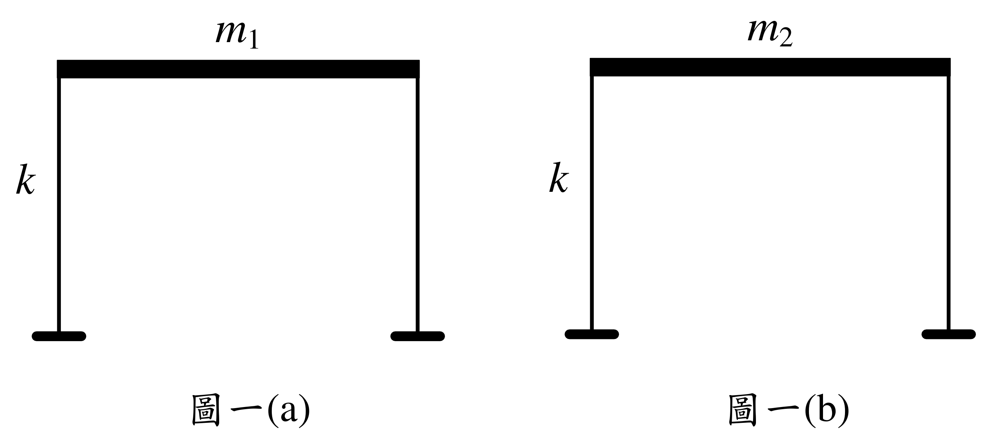
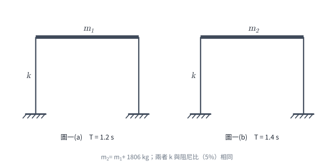
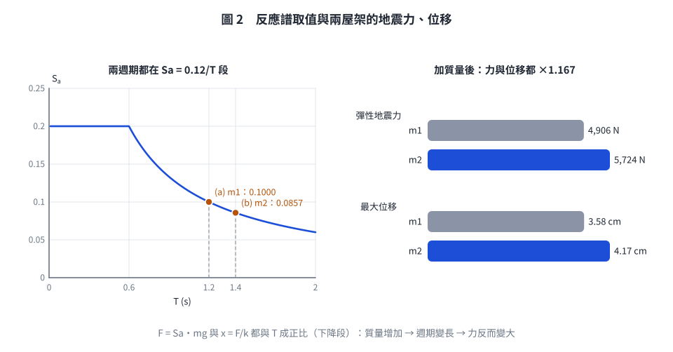

📄 題目正本：考卷原文・附圖・判讀清單（已確認）
SD-2012-1 題目正本
本檔只記錄考卷上寫了什麼、圖上畫了什麼，不含任何解法。解析見同資料夾
SD-2012-1.md。
判讀清單經使用者確認前，狀態為「待確認」；確認後本檔原則上不再修改（改動須回考卷原圖並記 log）。
| 項目 | 內容 |
|---|---|
| 考卷 | raw/exams/SD-2012_結構動力分析與耐震設計.pdf，第 1 頁（正面），第一題 |
| 考年 | 2012（民國101年）專技高考結構工程技師「結構動力分析與耐震設計」 |
| 配分 | 30 分（5／5／10／5／5） |
| 附圖 | SD-2012-1-fig-1.png（圖一(a)）、SD-2012-1-fig-2.png（圖一(b)，左上有游標）、SD-2012-1-fig-3.png（2026-11-15 由考卷 500 dpi 重擷取，兩圖並列） |
| 判讀狀態 | 已確認（2026-11-15 使用者授權依 Claude 建議確認。原轉錄：2026-11-15 轉錄；PyMuPDF 110 dpi 整頁＋400–500 dpi 局部放大，PDF 文字層核對原文；盲讀於開啟解析前完成） |
1. 考卷原文（逐字）
一、某一鋼筋混凝土建築結構（阻尼比為 5%）被模擬為「單層剪力屋架」如圖一(a)所示，樓層的側向總勁度為 $k$，質量為 $m_1$，振動週期為 1.2 sec。假設樓板上有其他固定加載物，使其樓層質量增加為 $m_2=m_1+1806$ kg（樓層的側向總勁度 $k$ 及阻尼比皆不變），此時其振動週期為 1.4 sec，所相應之單層剪力屋架如圖一(b)所示。假設此兩屋架承受某一地震（5%阻尼比所相應之水平加速度反應譜係數為 $S_a$）作用下能維持在線彈性，請回答下列問題：
$$S_a=\begin{cases}0.2, & T\le 0.6\ \text{sec}\\ 0.12/T, & T\ge 0.6\ \text{sec}\end{cases}$$
㈠樓層質量 $m_1$（以 kg 表示）為何？（5 分）
㈡樓層側向總勁度 $k$（以 N/m 表示）為何？（5 分）
㈢樓層質量分別為 $m_1$ 及 $m_2$ 的屋架結構受震後所相應之彈性地震力（以 N 表示）為何？（10 分）
㈣樓層質量分別為 $m_1$ 及 $m_2$ 的屋架結構受震後之樓層相對地面的最大位移（以 cm 表示）為何？（5 分）
㈤根據上述計算之結果，可以獲得何種結論？（5 分）
2. 考卷給的公式、附表與參數
- 考卷給的反應譜：$S_a=0.2$（$T\le0.6$ s）、$S_a=0.12/T$（$T\ge0.6$ s），5% 阻尼比。
- 給定：$T_1=1.2$ s（質量 $m_1$）、$T_2=1.4$ s（質量 $m_2=m_1+1806$ kg）、$k$ 不變、阻尼比 5% 不變、線彈性。
- 考卷沒有給：$S_a$ 的單位（係數，未寫 g）、$g$ 的數值。
- 卷首注意事項：㈠可以使用電子計算器。㈡不必抄題，作答時請將試題題號及答案依照順序寫在試卷上，於本試題上作答者，不予計分。㈢本試題之相關公式、物理常數、符號意義及設計參數未提及時，請自行合理推斷與假設。考試時間：2 小時。
3. 附圖

證據圖 SD-2012-1-fig-3.png（500 dpi 重擷取；舊圖 fig-1、fig-2 內容相同，fig-2 左上有游標）
圖面文字照錄：m1、k、圖一(a)、m2、k、圖一(b)
4. 判讀清單
| # | 項目 | 判讀 | 圖上／題文依據 | 把握 |
|---|---|---|---|---|
| 1 | $S_a$ 單位 | 無因次反應譜係數，乘重量（$mg$）得彈性地震力（即以 g 為單位的譜加速度） | 題文「水平加速度反應譜係數為 $S_a$」，數值 0.2 量級 | 確定（解讀） |
| 2 | 質量關係 | $m_2=m_1+1806$ kg，$k$ 與阻尼比不變 | 題文 | 確定 |
| 3 | 週期 | 圖(a) $T=1.2$ s、圖(b) $T=1.4$ s | 題文 | 確定 |
| 4 | 反應譜分段 | $T\le0.6$ s 取 0.2；$T\ge0.6$ s 取 $0.12/T$（兩段在 0.6 s 連續） | 題文公式 | 確定 |
| 5 | 柱底 | 固定（短水平粗線）；屋架為剪力屋架（樓版剛性） | 圖面＋題文「單層剪力屋架」 | 確定（解讀） |
| 6 | 「彈性地震力」 | 線彈性反應下的最大側力（未折減） | 題文「能維持在線彈性」 | 確定（解讀） |
| 7 | 單位要求 | ㈠ kg ㈡ N/m ㈢ N ㈣ cm | 題文 | 確定 |
| 8 | 考卷沒有給 | $g$ 的數值 | 題文 | 確定 |
轉錄：2026-11-15（SD-U1-3 題目正本推廣・批 2）
確認：2026-11-15 使用者授權依 Claude 建議確認（SD-U1-3 題目正本推廣・批 2，關卡一）
SD-2012-1｜SDOF 剪力屋架：反推質量與勁度，求彈性地震力與最大位移
題目資訊
| 欄位 | 內容 |
|---|---|
| 題號 | SD-2012-1 |
| 考年 | 2012（民國101年） |
| 科目分類 | SD-U1-3（單自由度、多自由度系統之動態分析及應用） |
| 副分類 | SD-U2-1（地震力之設計規範） |
| 關鍵詞 | SDOF、自然週期、側向勁度、質量反推、反應譜、彈性地震力、最大位移 |
| verificationStatus | unverified |
1. 題目（考卷原文見題目正本）
考卷原文、公式／附表、附圖與判讀清單（已確認）見
SD-2012-1-problem.md。本節只列解題時最容易讀錯的地方與本解使用的記號；題意以題目正本為準。

重繪自考卷附圖，依題目正本判讀清單；本圖攔下的判讀錯誤：兩屋架 k 與阻尼比相同，只差質量 1806 kg。
常見誤讀
| 項目 | 正確判讀 | 常見誤讀 |
|---|---|---|
| $S_a$ | 無因次係數（以 g 計），彈性地震力 $=S_a\,m g$（判讀 #1） | 直接當 m/s² |
| 質量關係 | $m_2=m_1+1806$ kg，$k$、阻尼比不變（判讀 #2） | — |
| 譜分段 | $T=1.2$、$1.4$ s 都落在 $S_a=0.12/T$ 段 | 套用 0.2 平台 |
| 單位 | ㈠ kg ㈡ N/m ㈢ N ㈣ cm | — |
本解記號： $T=2\pi\sqrt{m/k}$；$F=S_a\,mg$；$x_{max}=F/k$。
解題步驟
步驟一：求 m₁
SDOF 自然週期：$T = 2\pi\sqrt{m/k}$，故 $T^2 = \frac{4\pi^2 m}{k}$
$$\frac{T_2^2}{T_1^2} = \frac{m_2}{m_1} = \frac{m_1 + 1806}{m_1}$$
$$\left(\frac{1.4}{1.2}\right)^2 = 1 + \frac{1806}{m_1}$$
$$\frac{49}{36} - 1 = \frac{1806}{m_1} \implies \frac{13}{36} = \frac{1806}{m_1}$$
$$\boxed{m_1 = 1806 \times \frac{36}{13} \approx 5001 \text{ kg}}$$
（驗核：m₂ = 5001 + 1806 = 6807 kg，T₂ = 1.2 × √(6807/5001) = 1.2 × 1.1667 = 1.400 sec ✓）
步驟二：求 k
兩式相減可得（不需先算 m₁）：
$$T_2^2 - T_1^2 = \frac{4\pi^2}{k} \cdot (m_2 - m_1) = \frac{4\pi^2}{k} \times 1806$$
$$k = \frac{4\pi^2 \times 1806}{T_2^2 - T_1^2} = \frac{4\pi^2 \times 1806}{1.96 - 1.44} = \frac{4\pi^2 \times 1806}{0.52}$$
$$\boxed{k = \frac{39.478 \times 1806}{0.52} \approx 137{,}100 \text{ N/m} \approx 1.371 \times 10^5 \text{ N/m}}$$
驗核：$T_1 = 2\pi\sqrt{5001/137100} = 2\pi\sqrt{0.03648} = 2\pi \times 0.191 = 1.200 \text{ sec}$ ✓
步驟三：彈性地震力
兩週期均 > 0.6 sec，採用 $S_a = 0.12/T$：
| 結構 | T (sec) | Sa | 質量 m (kg) | 重量 W = mg (N) | 彈性地震力 F = Sa × W |
|---|---|---|---|---|---|
| m₁ 結構 | 1.2 | 0.12/1.2 = 0.10 | 5001 | 49,060 | 4,906 N |
| m₂ 結構 | 1.4 | 0.12/1.4 ≈ 0.0857 | 6807 | 66,777 | 5,724 N |
$$F_1 = S_a(T_1) \cdot m_1 g = 0.10 \times 5001 \times 9.81 = 4{,}906 \text{ N}$$
$$F_2 = S_a(T_2) \cdot m_2 g = \frac{0.12}{1.4} \times 6807 \times 9.81 = 5{,}724 \text{ N}$$
步驟四：最大相對位移
彈性系統樓層最大位移 = 彈性地震力 / 勁度：
$$x_{max} = \frac{F}{k}$$
| 結構 | F (N) | k (N/m) | x_max (m) | x_max (cm) |
|---|---|---|---|---|
| m₁ 結構 | 4,906 | 137,100 | 0.03578 | 3.58 cm |
| m₂ 結構 | 5,724 | 137,100 | 0.04174 | 4.17 cm |
驗核（以譜位移公式）：
$$S_d = S_a \cdot \frac{T^2}{4\pi^2} \cdot g = 0.10 \times \frac{1.44}{39.48} \times 9.81 = 0.03578 \text{ m} \checkmark$$
步驟五：結論
| 比較項目 | m₁ 結構 | m₂ 結構 | 變化 |
|---|---|---|---|
| 自然週期 T | 1.2 sec | 1.4 sec | +16.7%（延長） |
| Sa | 0.100 | 0.0857 | −14.3%（降低） |
| 質量 m | 5001 kg | 6807 kg | +36.1%（增大） |
| 彈性地震力 F | 4,906 N | 5,724 N | +16.7%（增大） |
| 最大位移 x | 3.58 cm | 4.17 cm | +16.5%（增大） |
關鍵結論：
在速度敏感區（T > T_c，即 Sa ∝ 1/T 之常速度區），增加質量並不會降低地震需求，反而使地震力與位移均增大。
原因分析：
- 增加質量使週期延長（T₁ → T₂），Sa 降低（從 0.10 → 0.0857，降幅 14.3%）
- 但質量增加幅度（36.1%）遠大於 Sa 降低幅度（14.3%）
- 淨結果：$F_2/F_1 = (S_{a2}/S_{a1}) \times (m_2/m_1) = (T_1/T_2) \times (m_2/m_1) = (1.2/1.4) \times (6807/5001) = 0.857 \times 1.361 = 1.167$
所以地震力增加 16.7%，最大位移也增加相同比例（勁度 k 不變）。
實務意涵： 若結構原本週期已落在速度敏感區（如本題 T > 0.6 sec），增設固定載重（如設備、覆土）會同步增大地震力與側向位移，不可忽視其耐震影響。

圖 2 兩個週期都落在 $S_a=0.12/T$ 段，$F=S_a mg$ 與 $x=F/k$ 都與 $T$ 成正比：質量增加、週期變長，地震力反而增加 16.7%。
計算彙整
| 參數 | 數值 |
|---|---|
| m₁ | 5001 kg |
| m₂ | 6807 kg |
| k | 1.371 × 10⁵ N/m |
| Sa(T₁ = 1.2 s) | 0.10 |
| Sa(T₂ = 1.4 s) | 0.0857 |
| F₁（m₁ 結構地震力） | 4,906 N |
| F₂（m₂ 結構地震力） | 5,724 N |
| x₁（m₁ 結構最大位移） | 3.58 cm |
| x₂（m₂ 結構最大位移） | 4.17 cm |
題型診斷
題型：SDOF 週期反推→勁度→反應譜地震力→位移→概念比較
解題路徑：
- 利用兩週期比值求 m₁（不需先知道 k）
- 利用週期差（T₂² − T₁²）與質量差求 k（比 k = 4π²m/T² 更直接）
- 確認兩個週期均在哪個反應譜段（都 > 0.6 s，故 Sa = 0.12/T）
- F = Sa × mg，x = F/k
- 比較兩結構結果，歸納速度敏感區增質量的影響
常見陷阱：
- ❌ 忘記確認兩個週期是否均在同一反應譜段（1.2 s 和 1.4 s 都 > 0.6 s ✓）
- ❌ 誤用 F = Sa × m（未乘 g）；Sa 是無因次係數，力 = Sa × W = Sa × mg
- ❌ 誤認增加質量→延長週期→Sa 降低→地震力變小（忽略質量增大對地震力的直接影響）
修正日期：2026-11-15（§1 改為指向題目正本，重繪附圖 figs/SD-2012-1-fig-1-problem.svg）
圖解補繪：2026-11-15（向量圖，腳本 gen_SD-2012-1.py，可重跑；非勘誤、答案不變）